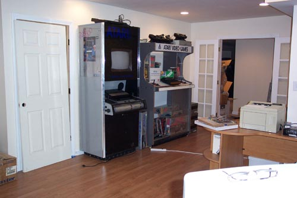
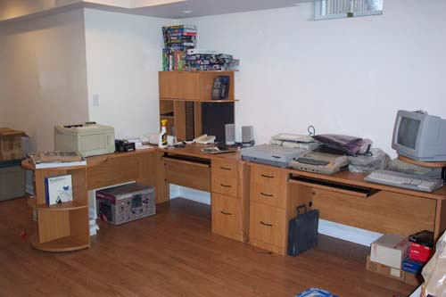
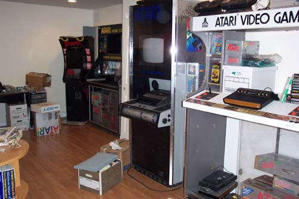
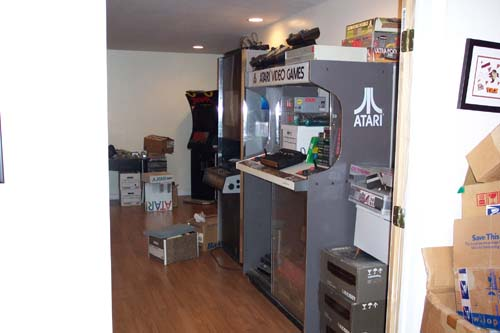

Been really quiet around the site lately hasn't it??? Well, there is a lot going on behind the scenes. Lots of new data is being readied for publishing up onto the site, several new eye-popping prototypes of never known to exist consoles have arrived in the recent weeks and will be posted shortly. Karl and Curt have worked together and updated the opening graphic with a new collage of characters in celebration of Atari's 30th anniversary.
In the next week or so we will post the time/date of an upcoming episode of Home & Garden TV (HGTV) that will feature technologies invasion into the 70's livingroom and will feature Atari & Pong's pinnacle role in bring a new era of entertainment into the home.
Meanwhile....
The Atari Museum office and arcade have been coming along and the following
are photo's of the office being moved into.



